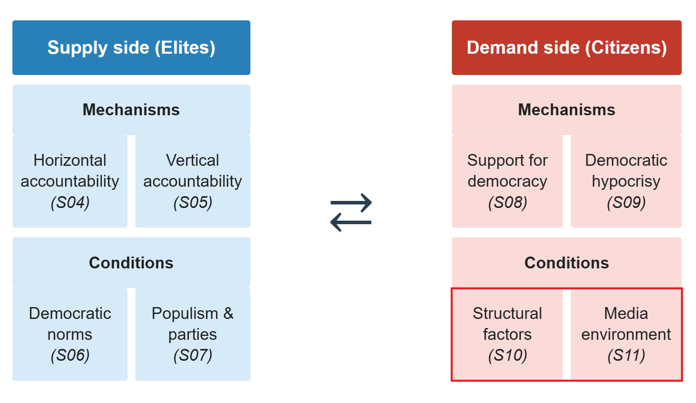
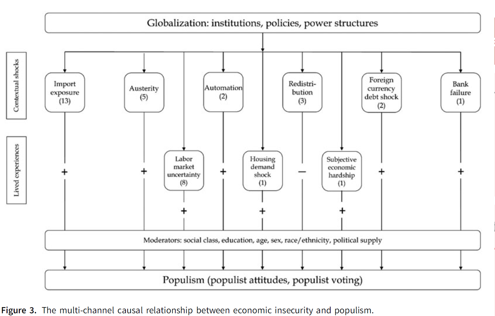
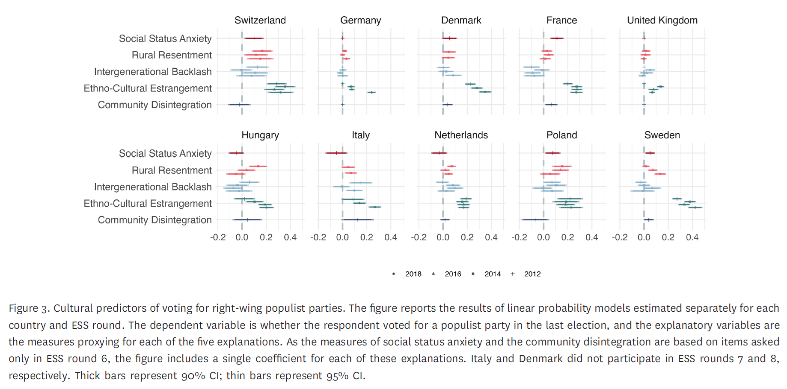
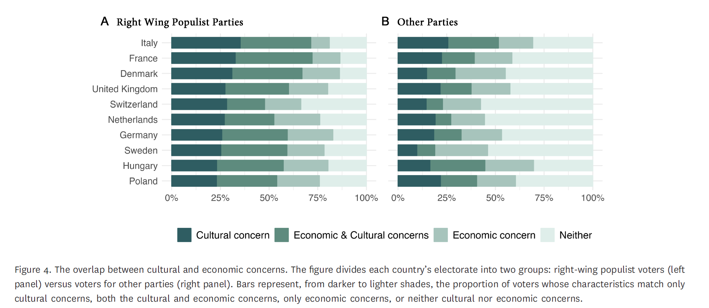

Grievances and Resentment
The Politics of Democratic Backsliding
Session 10
University of Lucerne
Introduction

This session’s goals
- Introduce the concept of political resentment and its micro-foundations
- Explore the role of economic and cultural grievances for the rise of populism
- Discuss the impact of societal transformations on democratic backsliding processes
- Students’ presentation: the case of El Salvador
The politics of resentment
Katherine Cramer
American political scientist; Professor at the University of Wisconsin-Madison
Research on public opinion, political communication, and rural politics
The Politics of Resentment (2016): years of ethnographic fieldwork in small-town Wisconsin community groups
Highly influential for subsequent work on the “left behind”, rural-urban divides, and the social psychology of populist support
Rural consciousness and resentment
Cramer, 2016
Rural consciousness: a lens through which people make sense of politics, composed of three elements:
A perception that rural areas lack political power and are ignored by decision-makers in cities
A sense that rural culture and lifestyle are disrespected by urban and suburban elites
A perception that rural areas do not receive their fair share of public resources and tax money
This is not an ideology: it is an identity-based interpretive framework through which politics is understood
Politics through identity, not ideology
Cramer, 2016
RQ: Why do rural residents support candidates and policies that may not serve their material interests?
Support for small government is not based on libertarian principle
It is based on resentment toward perceived undeserving others: urban public employees, welfare recipients, university elites
The question is not “what does this policy do?” but “who does this benefit, and do they deserve it?”
Deservingness, rooted in perceptions of hard work and place identity, does the work that ideology is supposed to do
Resentment and political mobilization
Cramer, 2016
The case of Scott Walker in Wisconsin
- Walker campaigned on cutting public employee benefits, framing public workers as over-paid, under-worked urbanites living off rural taxpayers
- This resonated precisely because it mapped onto existing rural consciousness: the perception that cities extract rural resources and return nothing
- Walker arrived at the right time: the Great Recession sharpened resentment toward public employees as private-sector workers felt squeezed
Politicians do not (only) create resentment; they tap into it and direct it
The causes of populism in the West
Explaining populism
Berman, 2021
We studied the rise of populism from a supply-side perspective, linked to the weakening of traditional party ties
However, the supply-side must be connected with demand-side explanations
Economic grievances
Inequality, deindustrialization, financial crisis, globalization losers
Sociocultural grievances
Immigration, status threat, cultural change, racial resentment
Economic grievances
Berman, 2021
At the macro level: clear correlation between rising inequality, financial crises, and populism
Right-wing populist parties rise after financial crises
Globalization has created winners and losers; losers blame elites and immigrants
However, the evidence is weaker at the individual level
- Fear of future insecurity and sociotropic perceptions of national decline may matter more than current personal circumstances
Sociocultural grievances
Berman, 2021
Cultural explanations are stronger at the individual level: immigration attitudes, status threat, and racial resentment are robust predictors of populist voting
However, preferences for immigration restriction change slowly, while populist voting surges rapidly
- Stable cultural attitudes may be activated, rather than fueled, by economic shocks and political entrepreneurs,
Your responses
“[…] although the author emphasizes that multiple factors interact, she does not provide a clear framework for how this interaction works in practice.” (Moses Emmanuel Saba)
“[…] the article focuses primarily on western democracies, which limits its generalizability.” (Moses Emmanuel Saba)
Economic insecurity as a causal driver
Scheiring et al., 2024
RQ: Do economic insecurity produce changes in populist voting?
Method: systematic review and meta-analysis of 36 quasi-experimental studies (IV, DiD, RD, survey experiments); 144 point estimates
Focus on economic insecurity triggered by external shocks, rather than macro- or micro-economic circumstances

Economic insecurity matters
Scheiring et al., 2024
All 36 studies report a significant positive causal association between economic insecurity and populism
67% of 144 individual estimates are significant and positive
Economic insecurity explains around one-third of recent surges in populism
- Evidence of publication bias confirmed; but the association remains significant after correction
- Effect is more robust for right-wing than left-wing populism
What drives the effect?
Scheiring et al., 2024
- Most studied treatment: import exposure / China shock (13 studies); robust across Western Europe and US
- Most robust individual treatments: housing demand shocks, subjective hardship, austerity, foreign currency debt shocks
- Important moderators: class, education, sex, race/ethnicity, and political supply
Six studies define cultural factors not as alternative explanations but as mediators
The five cultural storylines
Margalit, Raviv & Solodoch, 2025
Economic explanations appear juxtaposed to cultural factors
Overall, the idea of “cultural backlash” is often invoked as an umbrella term covering very different processes
Margalit et al. distinguish five distinct cultural storylines, delineating distinct social processes and observable implications
| Storyline | Social Process | Observable Implications |
|---|---|---|
| Intergenerational backlash | Materialist to postmaterialist value shift | Older, socially conservative voters |
| Ethnocultural estrangement | Immigration and low native birth rates | Native whites feeling culturally threatened |
| Rural resentment | Urbanization altering rural life | Rural residents alienated from urban elites |
| Social status anxiety | Job loss and declining social esteem | Lower-middle-class protecting social standing |
| Community disintegration | De-industrialization eroding communal life | Isolated people outside large cities |
Note: Adapted from Margalit, Raviv & Solodoch, 2025
Which storylines explain the populist vote?
Margalit, Raviv & Solodoch, 2025
Data: European Social Survey, 10 countries, 2012-2018; ANES 2016
Method: assessing each storyline’s prevalence in the populist electorate and its distinctiveness from non-populist voters
Key finding: ethnocultural estrangement is the most consistent and powerful predictor across countries

Cultural and economic grievances
Margalit, Raviv & Solodoch, 2025
A key finding is that economic and cultural concerns overlap but are not identical
Most populist voters match either cultural or economic concern profiles, and they overlap most often than for other parties
This suggests a heterogeneous coalition underpinning the rise of populist parties

Conclusion
How do economic and cultural factors interact to explain the rise of populist parties?
How can we place the role of societal grievances in backsliding processes?
How do grievances match with other factors, such as decreasing political trust and democratic hypocrisy?
Summary
- Political resentment is rooted in grievances and expressed through social identities and perceptions of (un)deservingness
- These grievances appear as a result of economic and sociocultural transformations that impact political behaviour
- Populist and authoritarian-oriented leaders exploit this resentment for political gains

Next session (15:45)
Session 11: Media Change and Disinformation
Case study: Philippines
Before…
Presentation by Giulio & Nikolina:
El Salvador
Thanks! 🙂

Hauptseminar - Spring Term 2026
Social and political change
In the previous sessions, we examined three processes behind citizens’ support for undemocratic politicians:
Weakening of traditional party ties and detachment from mainstream parties (Session 07)
Declining trust in representative institutions (Session 08)
Democratic hypocrisy: citizens trading democratic principles for partisan or policy gains (Session 09)
But what are the societal transformations underpinning these political processes?